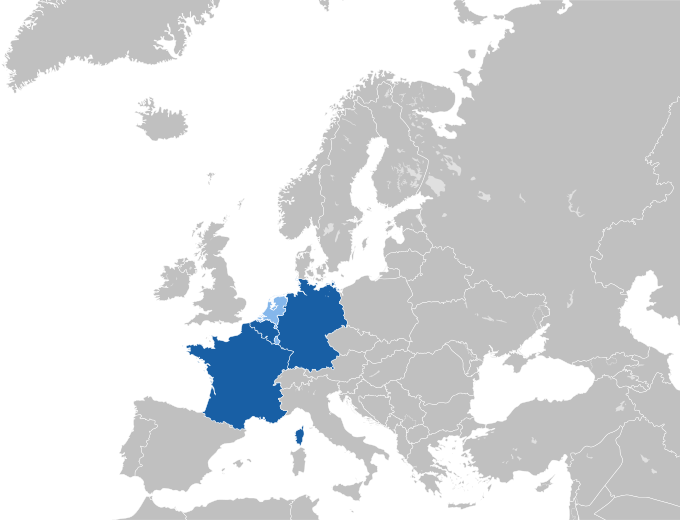

With 43 million registered users and €7.5 billion processed in its first year, Wero is not another fintech experiment. It is the banking sector’s most serious attempt to reclaim the European payments stack from global Big Tech platforms.

Wero is the consumer-facing product of the European Payments Initiative (EPI) — a consortium of major European banks across Germany, France, Belgium, and the Netherlands. Built on SEPA Instant Credit Transfer (SCT Inst) rails and ISO 20022 messaging standards, it operates as a pass-through wallet: no stored balance, no intermediary float, just a direct real-time link to the user’s existing bank account. Money moves in under 10 seconds, 24/7, 365 days a year.
After a decade of watching fragmented national schemes — Paylib in France, Payconiq in Belgium, iDEAL in the Netherlands — each solve the same problem in isolation, EPI made a deliberate architectural decision: consolidate at the rails level first, then build a unified consumer interface on top. The result is Wero: a wallet that is technically thin by design and strategically consequential by intent.
The single most important technical clarification about Wero is what it does not do: it does not hold funds. This is not a Venmo or PayPal model where a balance sits inside a platform. Understanding this distinction is foundational to understanding both its architecture and its regulatory positioning.
Wero holds no funds. Every euro flows directly between bank accounts via SCT Inst. The wallet is a UX abstraction layer, not a stored-value account. This keeps Wero outside the e-money institution regulatory perimeter and anchors it firmly within existing banking supervision.
Available as a standalone app or embedded natively inside partner banking apps. Users authenticate via their bank’s existing Strong Customer Authentication (SCA) — biometric or device-based — meaning no separate credential layer to maintain or breach.
Payments are triggered via phone number or QR code. The SEPA Proxy Lookup (SPL) directory, operated by equensWorldline, maps the proxy to the recipient’s IBAN in real time — without exposing account details to either party in the transaction.
Wero’s architecture separates concerns cleanly across three layers: the consumer UX, the messaging protocol, and the settlement infrastructure. Each layer operates independently but is tightly coupled by ISO 20022 message standards. A payment engineer approaching a Wero integration needs to think in terms of all three simultaneously.
While the step-by-step lifecycle illustrates the real-time nature of the transaction, the true engineering achievement lies in the structural decoupling of these layers. By isolating the consumer-facing UX from the high-availability settlement rails, the European Payments Initiative has created a "plug-and-play" ecosystem. This architectural separation ensures that banks can iterate on the mobile experience without touching the heavy-duty clearing infrastructure, and vice-versa. To visualize this separation of concerns, the static stack blueprint below illustrates how these layers sit on top of one another.
To understand why a consortium of competing banks invested hundreds of millions in a shared infrastructure, the payment economics must be unpacked. Every card transaction carries a Merchant Discount Rate (MDR) — a percentage-based fee that functions as a tax on merchant revenue. The MDR umbrella covers three components that A2A effectively eliminates:
A Wero payment via SCT Inst bypasses the scheme entirely. Money flows directly from Bank A to Bank B. The card network has no role in the transaction and, critically, no fee to collect. For merchants processing high volumes, replacing a 1–2% MDR with a flat PSP fee of approximately 0.7% is a structural cost reduction, not a marginal one.
For the banks, the calculus is different but equally compelling. As open banking APIs commoditize account access, the risk is that Big Tech captures the primary customer relationship, the "moment of intent" and UX layer — while banks are relegated to the background settlement layer. Wero is the banking sector’s answer: own the interface before the interface becomes irrelevant.
“The battle for payments is a battle for the interface. Wero is our collective effort to ensure European banks remain the primary point of contact for their customers.”
— Martina Weimert, CEO of the European Payments Initiative (EPI)This strategic shift from a scheme-based model to a direct-rail architecture has profound implications for the unit economics of every transaction. While traditional card payments are encumbered by legacy settlement windows and multi-party fee structures, Wero leverages the native speed of SCT Inst to drastically simplify the value chain. To understand why this is a structural threat to the status quo, we must compare the two models across the dimensions of speed, cost, and operational control.
| Dimension | Card Scheme (MDR) | Wero (A2A via SCT Inst) |
|---|---|---|
| Settlement Speed | T+1 / T+2 (Batch) | <10 Seconds, Irrevocable |
| Merchant Cost | 0.3%–2%+ (MDR) | ~0.7% or Fixed PSP Fee |
| Scheme Dependency | Visa / Mastercard Required | None — Bank-to-Bank Direct |
| Data Standard | Proprietary ARN | ISO 20022 (Rich, Structured) |
| Reversibility | Up to 120-day chargeback window | Irrevocable on Settlement |
| Consumer Auth | 3DS Redirect / OTP | SCA via Native Banking Biometric |
Wero’s deployment follows a disciplined phased approach: lead with P2P to build user habit, then extend to merchant use cases once the authentication and proxy infrastructure is proven at scale. The sequencing is deliberate and reflects lessons from schemes that tried to launch commerce-first and failed on consumer adoption.
The word “sovereignty” is used carefully in payments circles because it is often a proxy for protectionism. In Wero’s case, the concern is substantive: over 90% of European card transactions are processed through infrastructure owned and operated outside the European Union. Data generated by European consumers and merchants flows through non-European systems, creating both a regulatory exposure and a strategic dependency.
Payment Sovereignty: Wero is the first credible at-scale answer to Europe’s dependency on non-European payment infrastructure. Every transaction that settles on SCT Inst via TIPS or RT1 settles in Eurosystem central bank money — fully within European jurisdiction.
Digital Identity Synergy: By aligning with the EU Digital Identity (EUDI) Wallet, Wero moves beyond being a "payment app" and becomes a pillar of the European digital ecosystem. This allows for sovereign control over both identity and money—the two most critical data streams in a modern digital economy.
National Scheme Consolidation: EPI has systematically absorbed fragmented domestic schemes rather than building alongside them. This is deliberate architecture: scale through consolidation, not coexistence. A fragmented European market cannot compete with a unified global platform.
The iDEAL Precedent: The Netherlands’ iDEAL achieved over 70% e-commerce penetration — one of the highest domestic scheme adoption rates in the world. Its migration to Wero rails demonstrates that even a highly successful national scheme can be brought into the EPI architecture. If iDEAL can be absorbed, the consolidation thesis applies across every European market.
Regulatory Tailwind: The Instant Payments Regulation (IPR, EU 2024/886) mandates that Eurozone banks offer SCT Inst at parity price with standard transfers by October 2025. Wero is built on the infrastructure this regulation is forcing banks to build anyway. The regulatory cost is already being paid; Wero is the application layer on top.
A technically rigorous assessment of Wero must acknowledge the gaps alongside the strengths. Four critical open questions remain as of mid-2026 that will determine whether Wero achieves full-stack payment dominance or remains a strong P2P product with limited commercial reach.
For product and engineering teams evaluating Wero acceptance in 2026, four integration decisions require early architectural consideration. These are not configuration choices — they are structural decisions that affect reconciliation, dispute handling, and conversion optimization downstream.
“Wero is more than just a technical upgrade to our payment rails; it is a strategic declaration of intent. For the first time, Europe is building a stack that prioritizes its own sovereignty, ensuring that the primary interface of our digital lives remains in trusted, local hands.”
— Soma Bhagat, Payments Product Leader | Payment Strategy Blog